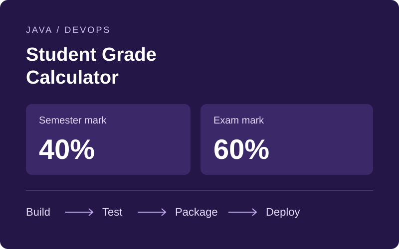

01 / Java & DevOps · Team project
Student Grade Calculator
A Java web application that calculates weighted final marks and grades from semester and exam results, built for a VUT DevOps practical assessment.
- My role
- CI Engineer and Git Lead on the assessment team.
- Project scope
- The project combines a Servlet/JSP interface with Maven and JUnit, build-and-test workflows in GitHub Actions and Jenkins, and Docker packaging for Tomcat deployment.